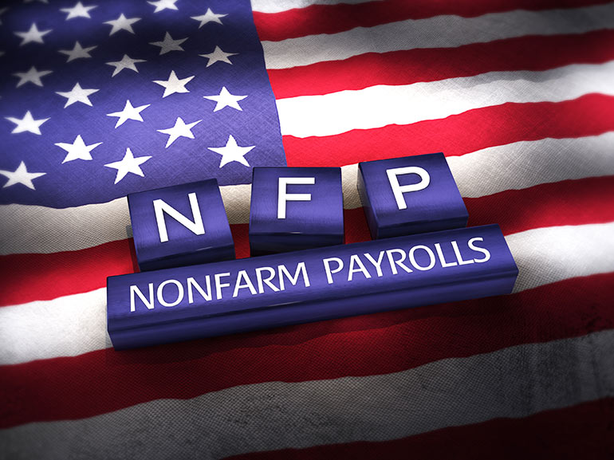
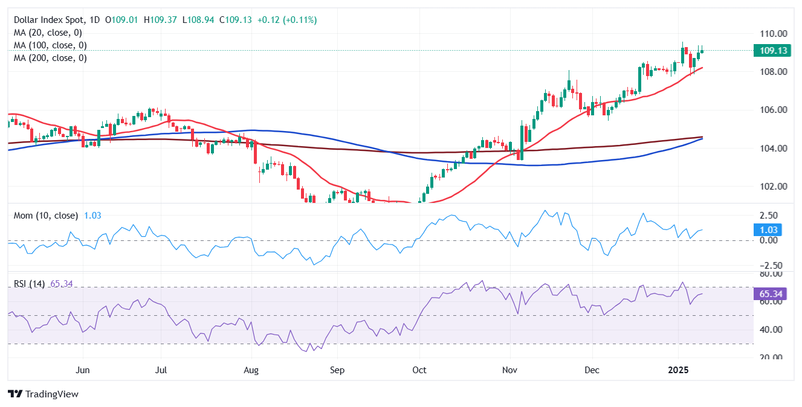
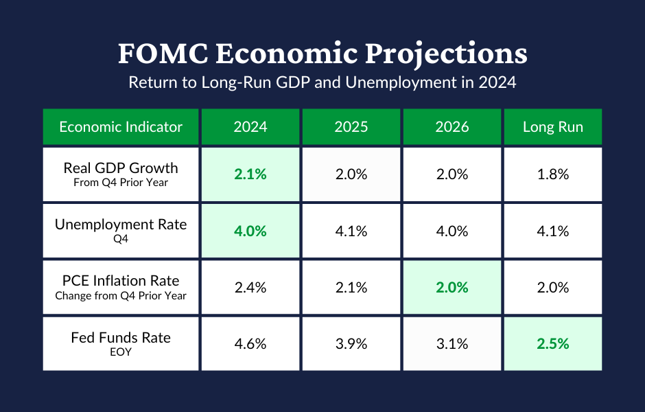
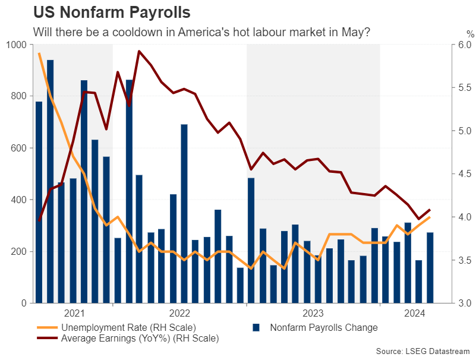

📊 News Penting, Efek ke USD & Emas
Dipublikasikan: 21 September 2025
1. NFP (Non-Farm Payrolls)
Angka kerja baru (di luar pertanian).
- USD: Naik kalau hasil bagus, turun kalau jelek.
- Emas: Turun kalau USD naik, naik kalau USD turun.
2. CPI (Inflasi)
Ukur harga barang/jasa.
- USD: Naik kalau inflasi tinggi, turun kalau rendah.
- Emas: Lawannya USD (turun saat USD kuat).
3. FOMC / Suku Bunga Fed
Tentukan naik/turun bunga.
- USD: Naik kalau bunga naik (hawkish), turun kalau bunga turun (dovish).
- Emas: Turun kalau bunga naik, naik kalau bunga turun.
4. GDP (Pertumbuhan Ekonomi)
Ukur kesehatan ekonomi.
- USD: Kuat kalau GDP tinggi, lemah kalau rendah.
- Emas: Turun saat USD kuat, naik saat USD lemah.
5. Unemployment Rate (Pengangguran)
Ukur banyaknya orang nganggur.
- USD: Kuat kalau pengangguran rendah, lemah kalau tinggi.
- Emas: Turun kalau USD kuat, naik kalau USD lemah.